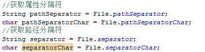

Java的集合框架: 类和接口存在于java.util包中.
Java的IO: 类和接口存在于java.io包中.
学习方法: 文档在手,天下我有!
-----------------------------------------------------------------------------------------
讲IO操作之前,必须要先讲File类(文件/目录).
-----------------------------------------------------------------------------------------
File类介绍和路径分隔符:
File类是IO包中唯一表示磁盘文件和磁盘目录的对象的路径.
该类包含了创建,删除文件,重命名文件,判断文件读写权限以及文件是否存在,查询等功能方法.
只能设置和获取文件本身的信息,不能设置和获取文件的内容.
-----------------------------------------------------------------------------------------
Java做开发: 一次编写,到处运行.
Unix: 严格区分大小写.
WIndows: 默认情况下是不区分大小写的.
路径分隔符,属性分隔符:
Unix: 使用”/”,来分割目录路径. 使用:来分割属性.
Windows: 使用”\”,来分割目录路径.但是在Java中一个”\”表示转义,在Windows平台的Java代码中表示一个路径,就得使用两个\\. 但是Windows支持/. 使用;来分割属性.
-----------------------------------------------------------------------------------------
因为我们不知道以后运行的系统平台是什么,就不知道该如何编写分隔符的问题,因此在File类中提供了两类常量,分别来表示路径分隔符和属性分隔符.


获取File路径和检测状态:
操作File路径和名称:
File getAbsoluteFile() :获取绝对路径
String getAbsolutePath():获取绝对路径
String getPath() :获取文件路径
String getName() :获取文件名称
File getParentFile():获取上级目录文件
String getParent() :获取上级目录路径
检测File状态的方法:
boolean canExecute() :判断是否是可执行文件
boolean canRead() :判断该文件是否可读
boolean canWrite():判断该文件是否可写
boolean isHidden():判断该文件是否是隐藏文件
long lastModified():判断该文件的最后修改时间
long length():获取该文件的长度大小(单位字节)

File类中方法-文件操作:
boolean isFile() :是否是文件
boolean createNewFile() :创建新的文件
static File createTempFile(String prefix, String suffix) :创建临时文件
boolean delete() :删除文件
void deleteOnExit() :在JVM停止时删除文件
boolean exists():判断文件是否存在
boolean renameTo(File dest) :重新修改名称
---------------------------------------------------------------------
File类中方法-目录操作
boolean isDirectory() :判断是否是目录
boolean mkdir() :创建当前目录
boolean mkdirs() :创建当前目录和上级目录
String[] list() :列出所有的文件名
File[] listFiles() :列出所有文件对象
static File[] listRoots() :列出系统盘符
需求:列出指定目录中所有的文件,包括子文件夹中的所有文件(使用递归算法(recursion)).

什么是IO:(Input/Output):输入和输出.
IO设备: 和电脑通信的设备.
输入设备:麦克风,扫描器,键盘,鼠标等.
输出设备:显示器,打印机,投影仪,耳机,音响等.
----------------------------------------------------------------------------
为什么程序需要IO呢?
案例1:打游戏操作,得分比较高,存储游戏的信息(XXX-888分).
此时需要把游戏中的数据存储起来,只能存储在文件中.
案例2:打游戏操作,查看游戏英雄榜, 英雄榜的数据存储在一个文件中的.
此时游戏程序需要去读取文件中的数据,并显示在游戏中.
案例3:上传和下载操作.
IO操作是一个相对的过程,一般的,我们在程序角度来思考(程序的内存).
程序需要数据: 把数据流入到程序中,输入.
程序需要保存数据,把数据传递给别人: 输出.

IO流的分类和操作模板:
--------------------------------------------------------------
IO流的分类,站在不同的角度,分类方式是不一样滴:
1):根据流向划分: 输入流和输出流.
2):根据数据的单位划分: 字节流和字符流.
3):根据功能的划分:节点流和包装流.
--------------------------------------------------------------
四大基流:(字节输出流,字节输入流,字符输出流,字符输入流)
四大基流都是抽象类: 其他流都是继承于这四大基流的.
我们不能创建四大基流的对象,只能创建其子类对象.
无论是什么流,都有close方法,用来关闭资源.
如果操作文件,就得开通一个流对象关联我们得磁盘文件,如果不关闭资源,那么磁盘的文件一直被程序所引用着,不能删除,也不能更改.

操作IO流的模板:
1):创建源或者目标对象(挖井).
拿文件流举例:
输入操作: 把文件中的数据流向到程序中,此时文件是源,程序是目标.
输出操作: 把程序中的数据流向到文件中,此时文件是目标,程序是源.
2):创建IO流对象(水管).
输入操作: 创建输入流对象.
输出操作: 创建输出流对象.
3):具体的IO操作.
输入操作: 输入流对象的read方法.
输出操作: 输出流对象的write方法.
4):关闭资源(勿忘). 一旦资源关闭之后,就不能使用流对象了,否则报错.
输入操作: 输入流对象.close();
输出操作: 输出流对象.close().
--------------------------------------------------------------
操作IO流的六字箴言:
读进来,写出去.
读进来: 进来强调了是输入, 读说明是read方法.
写出去: 出去强调了是输出,写说明是write方法.
文件流: 顾名思义,程序和文件打交道.
此时我们谈及的文件,值得是纯文本文件(txt的,不要使用Word,Excel),
-----------------------------------------------------------------
在字节流中,暂时不要使用中文.
FileInputStream: 文件的字节输入流
FileOutputStream: 文件的字节输出流
FileReader:文件的字符输入流
FileWriter:文件的字符输出流


对象流
序列化和反序列化:
序 列 化: 指把堆内存中的Java对象数据,通过某种方式把对象存储到磁盘文件中或者传递给其他网络的节点(在网络上传输).
我们把这个过程称之为序列化.
反序列化:把磁盘文件中的对象数据或者把网络节点上的对象数据,恢复成Java对象的过程.
为什么要做序列化:
1):在分布式系统中,需要共享的数据的JavaBean对象,都得做序列化,此时需要把对象再网络上传输,此时就得把对象数据转换为二进制形式.
以后存储在HttpSession中的对象,都应该实现序列化接口(只有实现序列化接口的类,才能做序列化操作).
2):服务钝化:如果服务发现某些对象好久都没有活动了,此时服务器就会把这些内存中的对象,持久化在本地磁盘文件中(Java对象-->二进制文件).
如果某些对象需要活动的时候,现在内存中去寻找,找到就使用,找不到再去磁盘文件中,反序列化我们得对象数据,恢复成Java对象.
需要做序列化的对象的类,必须实现序列化接口:java.io.Serializable接口(标志接口[没有抽象方法]).
底层会判断,如果当前对象是Serializable的实例,才允许做序列化. boolean ret = Java对象 instanceof Serializable;
在Java中大多数类都已经实现Serializable接口.
使用对象流来完成序列化和反序列化操作:
ObjectOutputStream: 通过writeObject方法做序列化操作的.
ObjectInputStream: 通过readObject方法做反序列化操作的.

序列化的细节序列化的版本:
1):如果某些数据不需要做序列化,比如密码,此时怎么办?
理论上说,静态的字段和瞬态的字段是不能做序列化操作的.
2):序列化的版本问题:
反序列化Java对象时必须提供该对象的class文件,现在问题是,随着项目的升级,系统的class文件也会升级(增加一个字段/删除一个字段),如何保证两个class文件的兼容性? Java通过serialVersionUID(序列化版本号)来判断字节码是否发生改变.
如果不显示定义serialVersionUID类变量,该类变量的值由JVM根据类相关信息计算,而修改后的类的计算方式和之前往往不同.
从而造成了对象反序列化因为版本不兼容而失败的问题.
解决方案:在类中提供一个固定的serialVersionUID.

打印流,打印数据的,打印流只能是输出流:
PrintStream: 字节打印流
PrintWriter: 字符打印流
-对于PrintWriter来说,当启用字段刷新之后,

调用println或者printf或者format方法,便会立马刷新操作.
如果没有开启自动刷新,则需要手动刷新或者当缓冲区满的时候,再自动刷新.
使用打印流作为输出流,此时的输出操作会特别简单,因为在打印流中:
提供了print方法:打印不换行
提供了println方法:打印再换行
print和println方法可以支持打印/输出各种数据类型的数据,记住void println(Object x) 即可.
打印流中的格式化输出(prinf方法):
System.out.println();其实等价于 PrintStream ps = System.out; ps.println()

标准的IO:
标准的输入: 通过键盘录入数据给程序.
标准的输出: 在屏幕上显示程序数据.
-----------------------------------------------------------
在System类中有两个常量:
InputStream in = System.in;
PrintStream out = System.out;
-----------------------------------------------------------
标准流的重定向操作:
标准的输入: 通过键盘录入数据给程序.
重新指定输入的源不再是键盘,而是一个文件.
static void setIn(InputStream in) 重新分配“标准”输入流。
此后,System.in数据的来源就是通过setIn制定的源.
标准的输出: 在屏幕上显示程序数据.
重新指定输出的目标不再是屏幕,而是一个文件.
static void setOut(PrintStream out) 重新分配“标准”输出流。

java.util.Scanner类:扫描器类,表示输入操作.
存在的方法: xxx表示数据类型,如byte,int ,boolean等.
boolean hasNextXxx():判断是否有下一种类型的数据
Xxx nextXxx():获取下一个该类型的数据.

Properties类加载文件
配置文件:资源文件(以.properties作为拓展名的文件)/属性文件:
做项目开发,为何使用配置文件?
把所有的数据存储在代码中,写死了,”硬编码”.
比如:在Java中需要连接数据库,必须拥有数据的账号和密码.
此时我们就得在Java代码中编写,类似的代码:
String username=”root”;
String password=”admin”
代码程序运行OK.
但是,以后我们把项目部署在别人电脑/服务器中,别人电脑中的数据库的账号和密码可以不再是root和admin,此时我们就得去项目中到处去找使用了账号和密码的地方.
部署项目的是实施人员,为了安全操作,不能让其直接修改代码.
此时,我们专门为数据库提供一个配置文件,里面专门存储数据库连接相关的信息.
--------------------------------------------------------------------
db.properties
-----------------------------------
#key=value
username=root
password=admin
.......
--------------------------------------------------------------------
现在数据库的连接信息在db.properties文件中,而Java代码需要获取该文件中的信息.
重心转移: Java代码如何加载properties文件,如何获取该文件中的数据.
必须使用Properties类(Hashtable的子类,Map接口的实现类).

NIO:New IO:
从JDK1.4开始提出的,新的IO,可以把一块磁盘文件映射到内存中,我们再去读取内存中的数据.
存放在java.nio包中.
Java NIO（New IO）是从Java 1.4版本开始引入的一个新的IO API，可以替代标准的Java IO API
现在主要运用于服务器中,对于我们写代码依然使用传统的IO就够了.
在JDK1.7中提取出更新的IO,NIO2.0.-->Files(文件工具类).

IO流总结
四大基流:
InputStream---- OutputStream
Reader ---- Writer
IO流的总结和梳理:
文件流:
FileInputStream
FileOutputStream
FileReader
FileWriter
缓冲流:
BufferedInputStream
BufferedOutputStream
BufferedReader
BufferedWriter
转换流(把字节转换为字符):
InputStreamReader
OutputStreamWriter
内存流(临时存储数据):
ByteArrayInputStream
ByteArrayOutputStream
CharArrayReader
CharArrayWriter
StringReader
StringWriter
顺序流(合并流):
SequenceInputStream
对象流(序列化和反序列化):
ObjectInputStream
ObjectOutputStream
打印流:
PrintStream
PrintWriter
数据流:
DataInputStream
DataOutputStream
管道流:
PipedInputStream
PipedOutputStream
PipedReader
PipedWriter
------------------
File
FIlenameFilter
RandomAccessFile
Files